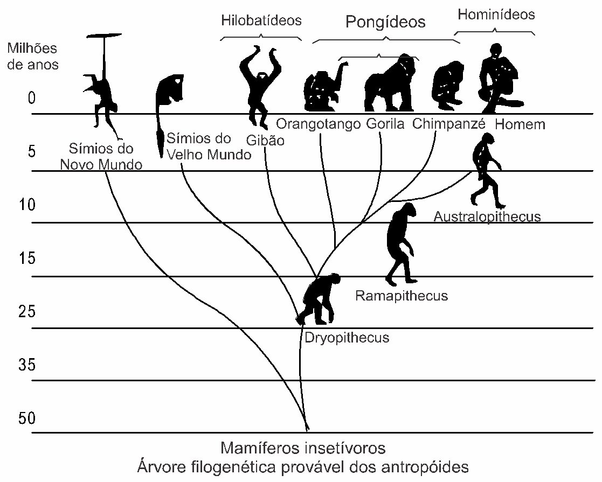
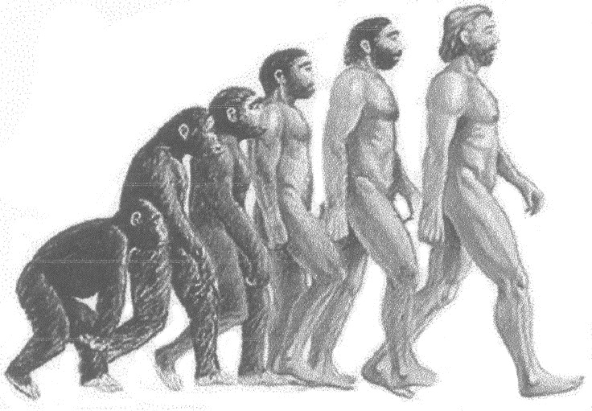

(ENEM) Embora seja um conceito fundamental para a Biologia, o termo “evolução” pode adquirir significados diferentes no senso comum. A ideia de que a espécie humana é o ápice do processo evolutivo é amplamente difundida, mas não é
compartilhada por muitos cientistas.
Para esses cientistas, a compreensão do processo citado baseia-se na ideia de que os seres vivos, ao longo do tempo, passam por
a) modificação de características.
b) incremento no tamanho corporal.
c) complexificação de seus sistemas.
d) melhoria de processos e estruturas.
e) especialização para uma determinada finalidade.
(ENEM) Alguns anfíbios e répteis são adaptados à vida subterrânea. Nessa situação, apresentam algumas características corporais como, por exemplo, ausência de patas, corpo anelado que facilita o deslocamento no subsolo e, em alguns
casos, ausência de olhos.
Suponha que um biólogo tentasse explicar a origem das adaptações mencionadas no texto utilizando conceitos da teoria evolutiva de Lamarck. Ao adotar esse ponto de vista, diria que
a) as características citadas no texto foram originadas pela seleção natural.
b) a ausência de olhos teria sido causada pela falta de uso dos mesmos, segundo a lei de uso e desuso.
c) o corpo anelado é uma característica fortemente adaptativa, mas seria transmitida apenas à primeira geração de descendentes.
d) as patas teriam sido perdidas pela falta de uso e, em seguida, essa característica foi incorporada ao patrimônio genético e então transmitida aos descendentes.
e) as características citadas no texto foram adquiridas por meio de mutações e depois, ao longo do tempo, foram selecionadas por serem mais adaptadas ao ambiente em que os organismos se encontram.
(ENEM) As cobras estão entre os animais peçonhentos que mais causam acidentes no Brasil, principalmente na área rural. As cascavéis (Crotalus), apesar de extremamente venenosas, são cobras que, em relação a outras
espécies, causam poucos acidentes a humanos. Isso se deve ao ruído de seu “chocalho”, que faz com que suas vítimas percebam sua presença e as evitem. Esses animais só atacam os seres humanos para sua defesa e se alimentam de
pequenos roedores e aves. Apesar disso, elas têm sido caçadas continuamente, por serem facilmente detectadas.
Ultimamente os cientistas observaram que essas cobras têm ficado mais silenciosas, o que passa a ser um problema, pois, se as pessoas não as percebem, aumentam os riscos de acidentes.
A explicação darwinista para o fato de a cascavel estar ficando mais silenciosa é que
a) a necessidade de não ser descoberta e morta mudou seu comportamento.
b) as alterações no seu código genético surgiram para aperfeiçoá-la.
c) as mutações sucessivas foram acontecendo para que ela pudesse adaptar-se.
d) as variedades mais silenciosas foram selecionadas positivamente.
e) as variedades sofreram mutações para se adaptarem à presença de seres humanos.
(UESPI) Joana vai ao médico se queixando de dor na garganta, e diz que os antibióticos que havia tomado não resolveram seu problema. Ao definir o diagnóstico, o médico relatou que a infecção era causada por uma bactéria resistente
aos antibióticos ingeridos. Considerando seu conhecimento sobre a teoria da seleção natural proposta há cerca de 150 anos por Darwin e Wallace, leia as proposições abaixo.
1) O hábito da automedicação pode selecionar bactérias naturalmente resistentes a antibióticos presentes no corpo de Joana.
2) Mutações induzidas pela ação das drogas utilizadas são os principais agentes da seleção de bactérias resistentes a antibióticos.
3) Além dos antibióticos, bactérias responsáveis por uma infecção sofrem a pressão seletiva da resposta imunológica.
Está(ão) correta(s) apenas:
a) 1 e 2.
b) 2 e 3.
c) 1 e 3.
d) 1.
e) 2.
(UNESP)
Tuco-tuco brasileiro (Ctenomys brasiliensis), Blainville, 1826. (mamiferosdomundo. blogspot.com.br)
O tuco-tuco (Ctenomys brasiliensis) é um animal curioso, que se pode, em linhas gerais, descrever como roedor com hábitos de toupeira. [...] São animais noturnos, e alimentam-se especialmente de raízes de plantas, o
que explica os túneis longos e superficiais que cavam. [...] O homem que mos trouxe afirmou que muito comumente os tuco-tucos são encontrados cegos. O exemplar que eu conservava no álcool achava-se nesse estado. [...] Lamarck
rejubilar-se-ia com este fato, se acaso o tivesse conhecido.
(Charles Darwin. Diário das investigações sobre a História Natural e Geologia dos países visitados durante a viagem ao redor do mundo pelo navio de Sua Majestade “Beagle”, sob o comando do Capt. Fitz Roy, R. A, 1871.)
O texto foi escrito por Charles Darwin, em seu diário de bordo, em 26 de julho de 1832, à época com 23 anos de idade, quando de sua passagem pelo Brasil e Uruguai.
Escrito antes que construísse sua Teoria da Evolução, o texto revela que Darwin conhecia a obra de Lamarck.
Como Lamarck explicaria as observações de Darwin sobre o tuco-tuco brasileiro, e qual é a explicação apresentada pela Teoria da Evolução na Biologia moderna?
(FUVEST – SP) O conhecimento sobre a origem da variabilidade entre os indivíduos, sobre os mecanismos de herança dessa variabilidade e sobre o comportamento dos genes nas populações foi incorporado à Teoria da Evolução biológica
por seleção natural de Charles Darwin.
Diante disso, considere as seguintes afirmativas:
A seleção natural leva ao aumento da frequência populacional das mutações vantajosas num dado ambiente; caso o ambiente mude, essas mesmas mutações podem tornar seus portadores menos adaptados e, assim, diminuir de frequência.
A seleção natural é um processo que direciona a adaptação dos indivíduos ao ambiente, atuando sobre a variabilidade populacional gerada de modo casual.
A mutação é a causa primária da variabilidade entre os indivíduos, dando origem a material genético novo e ocorrendo sem objetivo adaptativo.
Está correto o que se afirma em
a) I, II e III.
b) I e III, apenas.
c) I e II, apenas.
d) I, apenas.
e) III, apenas.
Explique como ocorre a formação de novas espécies de acordo com a seleção natural.
(UFC – CE) Em um estudo realizado nas Ilhas Galápagos, um casal de pesquisadores observou que indivíduos de uma espécie de tentilhão (espécie A) comumente se alimentavam de sementes de vários tamanhos. A ilha onde a espécie A
ocorria foi colonizada por outra espécie de tentilhão (espécie B). Indivíduos de B se alimentavam de sementes grandes e eram mais eficientes que A na aquisição deste recurso. Com o passar dos anos, os dois pesquisadores observaram
que o tamanho médio do bico dos indivíduos de A estava reduzindo gradualmente. Considerando que pássaros com bicos maiores conseguem se alimentar de sementes maiores, o processo de redução de bico observado em A é um exemplo de
seleção:
a) direcional: o estabelecimento de indivíduos da espécie B representou uma pressão seletiva que favoreceu indivíduos da espécie A com bicos pequenos.
b) disruptiva: o estabelecimento de indivíduos da espécie B representou uma pressão seletiva que favoreceu indivíduos da espécie A com bicos muito pequenos ou muito grandes.
c) estabilizadora: o estabelecimento de indivíduos da espécie B representou uma pressão seletiva que favoreceu indivíduos da espécie A com bicos de tamanho intermediário.
d) sexual: o estabelecimento de indivíduos da espécie B aumentou a competição entre machos da espécie A por acesso às fêmeas.
e) direcional: o estabelecimento de indivíduos da espécie B induziu mutações em indivíduos da espécie A.
(FAFIRE – PE) As asas de uma ave e de um inseto são utilizadas para um mesmo objetivo, que é o voo. Entretanto, a origem embriológica dessas estruturas corresponde a um exemplo de
a) responda ao questionamento feito no primeiro balão;
b) explique por que a afirmação contida no segundo balão está incorreta.
Texto e imagem para as questões 11, 12 e 13.
(ENEM) O assunto na aula de Biologia era a evolução do homem. Foi apresentada aos alunos uma árvore filogenética, igual à mostrada na ilustração, que relacionava primatas atuais e seus ancestrais.

Após observar o material fornecido pelo professor, os alunos emitiram várias opiniões, a saber:
os macacos antropoides (orangotango, gorila, chimpanzé e gibão) surgiram na Terra mais ou menos contemporaneamente ao homem.
alguns homens primitivos, hoje extintos, descendem dos macacos antropoides.
na história evolutiva, os homens e os macacos antropoides tiveram um ancestral comum.
não existe relação de parentesco genético entre macacos antropoides e homens.
Analisando a árvore filogenética, você pode concluir que:
a) todas as afirmativas estão corretas.
b) apenas as afirmativas I e III estão corretas.
c) apenas as afirmativas II e IV estão corretas.
d) apenas a afirmativa II está correta.
e) apenas a afirmativa IV está correta.
Foram feitas comparações entre DNA e proteínas da espécie humana com DNA e proteínas de diversos primatas. Observando a árvore filogenética, você espera que os dados bioquímicos tenham apontado, entre os primatas atuais, como nosso
parente mais próximo o
a)Australopithecus.
b) chimpanzé.
c)Ramapithecus.
d) gorila.
e) orangotango.
Se fosse possível a uma máquina do tempo percorrer a evolução dos primatas em sentido contrário, aproximadamente quantos milhões de anos precisaríamos retroceder, de acordo com a árvore filogenética apresentada, para encontrar o
ancestral comum do homem e dos macacos antropoides (gibão, orangotango, gorila e chimpanzé)?
a) 5
b) 10
c) 15
d) 30
e) 60
(ENEM)
“Os progressos da Medicina condicionaram a sobrevivência de número cada vez maior de indivíduos com constituições genéticas que só permitem o bem-estar quando seus efeitos são devidamente controlados através de drogas ou
procedimentos terapêuticos. São exemplos os diabéticos e os hemofílicos, que só sobrevivem e levam vida relativamente normal ao receberem suplementação de insulina ou do fator VIII da coagulação sanguínea”.
SALZANO, M. Francisco. Ciência Hoje: SBPC: 21(125), 1996.
Essas afirmações apontam para aspectos importantes que podem ser relacionados à evolução humana. Pode- se afirmar que, nos termos do texto,
a) os avanços da Medicina minimizam os efeitos da seleção natural sobre as populações.
b) os usos da insulina e do fator VIII da coagulação sanguínea funcionam como agentes modificadores do genoma humano.
c) as drogas medicamentosas impedem a transferência do material genético defeituoso ao longo das gerações.
d) os procedimentos terapêuticos normalizam o genótipo dos hemofílicos e diabéticos.
e) as intervenções realizadas pela Medicina interrompem a evolução biológica do ser humano.
(ENEM) As mudanças evolutivas dos organismos resultam de alguns processos comuns à maioria dos seres vivos. É um processo evolutivo comum a plantas e animais vertebrados:
a) movimento de indivíduos ou de material genético entre populações, o que reduz a diversidade de genes e cromossomos.
b) sobrevivência de indivíduos portadores de determinadas características genéticas em ambientes específicos.
c) aparecimento, por geração espontânea, de novos indivíduos adaptados ao ambiente.
d) aquisição de características genéticas transmitidas aos descendentes em resposta a mudanças ambientais.
e) recombinação de genes presentes em cromossomos do mesmo tipo durante a fase da esporulação.
(UFAL) À luz do conhecimento atual, observe a ilustração abaixo e aponte a alternativa que melhor responde à pergunta: o homem é originário do macaco?

a) A espécie Homo sapiens se distingue de outros hominídeos e, portanto, não se originou dos macacos, que são primatas.
b) Os gêneros Homo e Australopithecus representam o homem moderno e conviveram na mesma época com os macacos; assim, não são seus descendentes.
c) Chimpanzés são bípedes e parecidos morfologicamente com o homem; portanto, os chimpanzés deram origem ao homem.
d) Os seres humanos e chimpanzés possuíam um ancestral em comum e divergiram ao longo da evolução.
e) Os seres humanos e chimpanzés convergiram ao longo da evolução desenvolvendo características análogas.
(EMESCAM – ES) Segundo o princípio de Hardy-Weinberg, uma população, para manter-se em equilíbrio gênico, deve ser bastante numerosa e panmítica, isto é,
a) os cruzamentos entre os indivíduos devem obedecer às leis da seleção natural dos gametas, propostas pelo naturalista Charles Darwin.
b) os cruzamentos entre os indivíduos devem obedecer à lei da segregação independente dos cromossomos homólogos e sexuais.
c) os cruzamentos entre os indivíduos com os diferentes genótipos devem ocorrer ao acaso, sem qualquer interferência e/ou preferência.
d) os cruzamentos entre os indivíduos apenas devem sofrer influência dos fatores evolutivos naturais, tais como as mutações e migrações.
e) os cruzamentos entre os indivíduos com o fenótipo dominante devem ocorrer, preferencialmente, em relação àqueles e os indivíduos portadores do fenótipo recessivo.
(PUCPR) Em uma população em equilíbrio de Hardy- -Weinberg, a frequência de um alelo dominante é 0,7. A percentagem esperada do genótipo recessivo é de
a) 9%.
b) 28%.
c) 90%.
d) 3%.
e) 30%.
(UFPI) Duas populações diferentes de borboletas, em equilíbrio de Hardy-Weinberg, contam, cada uma, com 400 indivíduos diploides. A população 1 é constituída principalmente de indivíduos homozigotos (180 AA, 80 Aa e 140 aa) e a
população 2 é composta majoritariamente de indivíduos heterozigotos (90 AA, 260 Aa e 50 aa). Analise o que se declara a respeito dessas populações nas afirmativas a seguir e assinale V, para as verdadeiras, ou F, para as falsas.
a) O pool genético e as frequências alélicas são iguais para ambas
as populações, mas os alelos estão distribuídos de forma diferente entre genótipos homo e heterozigotos.
b) As frequências genotípicas, na população 1, para os genótipos
AA, Aa e aa, são, respectivamente, 0,45; 0,2 e 0,35. Na população 2, as frequências
genotípicas são de 0,22 AA; 0,65 Aa e 0,12 aa.
c) O pool genético e as frequências alélicas são diferentes para
ambas as populações, mas os alelos estão distribuídos de forma igual entre genótipos homo e heterozigotos.
d) A possibilidade de que dois gametas, carregando o alelo A,
fertilizem-se é de 0,2025; e a probabilidade de fertilização, entre os gametas que carregam o alelo a, é
de 0,3025.
(UEFS – BA) A consolidação da Teoria Darwiniana só foi alcançada no século XX, com a contribuição robusta dos conhecimentos na área da Genética.
Nesse contexto, analise as afirmativas e marque com V as verdadeiras e com F as falsas.
( ) A compreensão dos princípios da hereditariedade aplicados às populações permite analisar as frequências gênicas e genotípicas em várias gerações.
( ) As mutações gênicas constituem uma explicação para a variabilidade nas populações.
( ) A seleção natural é um mecanismo que privilegia os genótipos independente de um contexto ambiental.
( ) O tamanho pequeno das populações é um fator que contribui para a manutenção da variabilidade genética.
A alternativa que indica a sequência correta, de cima para baixo, é a